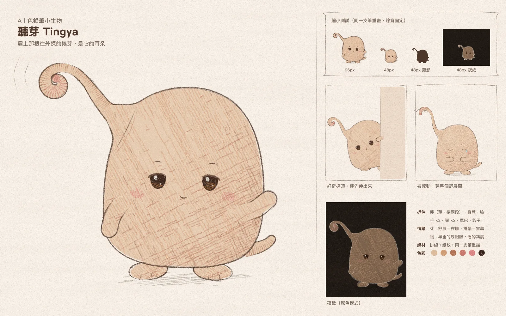
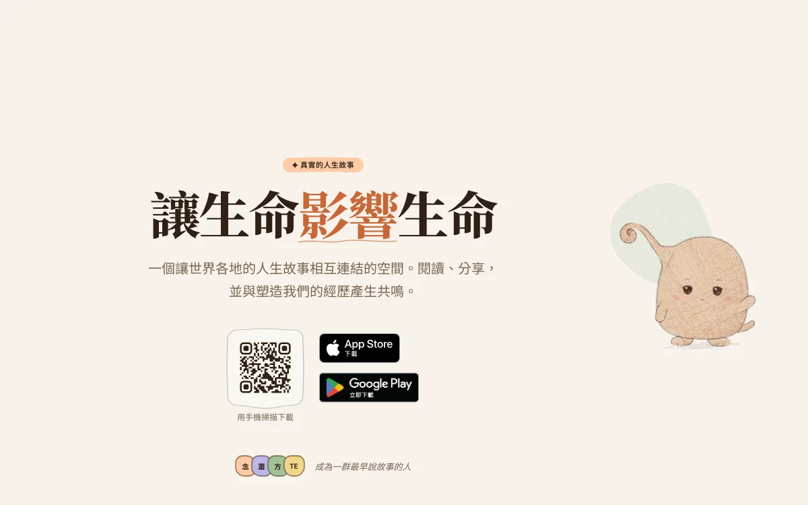

方向 A 色鉛筆小生物
聽芽 Tingya
左肩長出一根往外探的蕨芽，像側過來的一隻耳朵。聽見故事時芽會慢慢舒展，害羞時就捲緊。它不搶話，眼瞼半垂，安安靜靜地在聽。

1角色概念
一隻用「芽」聽故事的小生物。靈感來自蕨類的捲芽、包著新芽的葉鞘、耳蝸的螺旋，以及人想聽清楚時把一隻耳朵轉向聲音的姿勢。它的主要動作是聽；它是被故事養大的，聽得越多，芽長得越開。
2外型設計
頭身一體的球莖形。左肩隆起成一段平滑的「葉鞘肩」，芽從那裡長出、往外下方捲，整隻往右傾 3°，身體天生不對稱。招牌眼型是半垂的厚上眼瞼。主色是杏桃燕麥色排線 oklch(73% 0.085 58)，陰影偏赤陶，芽尖與腮紅是玫瑰色。小手、小腳、一截短尾。
3個性與情感
聚會裡坐在角落、你說話時會把頭偏過來的那個人。情緒主要靠芽和眼睛：
- 好奇：芽半舒展，探向聲音的方向
- 開心：捲的部分像彈簧彈兩下
- 害羞：芽捲緊，收到肩後
- 感動：芽整根舒展、尖端顫動，眼睛閉成弧
- 陪伴：兩根芽尖輕碰，呼吸慢慢同步
4手繪風格
色鉛筆短排線（背光處才加交叉排線），紙紋讓顏料只留在紙的凸處，輪廓是兩三道帶壓感、頭尾漸細的重描。小尺寸用同一支筆重畫、線寬固定，呼應網站「一支筆」的原則。夜紙版的輪廓用網站夜裡的粉筆墨色，整隻的亮度低於大標。
5Landing Page 的應用想像

示意：第二版放在首頁截圖上，約 190px 高。
放在畫面右側，讓芽朝主標的方向「聽」。桌機 160–200px，在內容欄外；手機只從右緣探出芽和半個身體。出場永遠是芽先探出來，停兩拍，身體才跟上。停留時呼吸、眨眼，臉朝游標滑動。兩隻相遇時芽尖輕碰，空中留下兩三道淡淡的鉛筆波紋，正好接到 logo 的三道波浪。離場時芽捲緊、躲進色塊後面，過一陣子從另一團色塊冒出來。
6未來系列化的潛力
世界觀是「被故事養大的小生物」，每隻都有自己接收故事的器官。差異來自三條軸：器官長在哪裡（決定剪影）、筆觸語言（排線、點描、長弧線）、身形與移動方式（跳步、滑行、用尾巴彈）。例如一隻低矮寬身、背上長苔絨，感動時會飄出幾顆絨種的慢郎中；或一隻用尾巴尖感覺地面震動、好奇時尾巴彎成問號的話多小傢伙。要防的退化是「同一顆圓身，頭上換一個器官」。
第一版的芽在頭頂正中，剪影接近天線寶寶 Laa-Laa，第二版已移到肩上。「身上長植物」仍會讓人想到皮克敏；臉屬於「深色眼加腮紅」這一大類。
芽移到左肩，身體改成不對稱；半垂厚眼瞼定為招牌；日夜配色重做；芽拆成莖與捲兩段，方便動畫；SVG 修成合法 XML。
約 10–13 人日
日夜各一組烘焙圖。芽的大幅舒展需要 2–3 張狀態圖或 Rive。第二隻約再 6–8 人日。